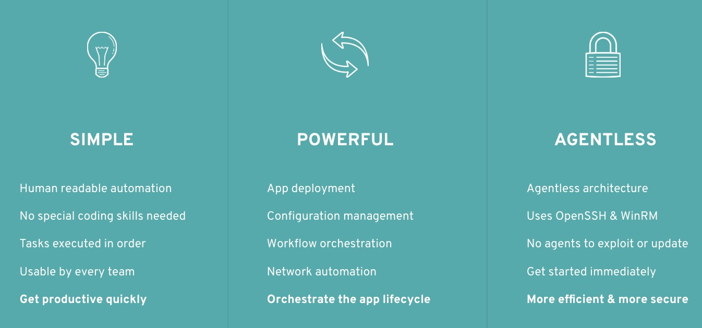
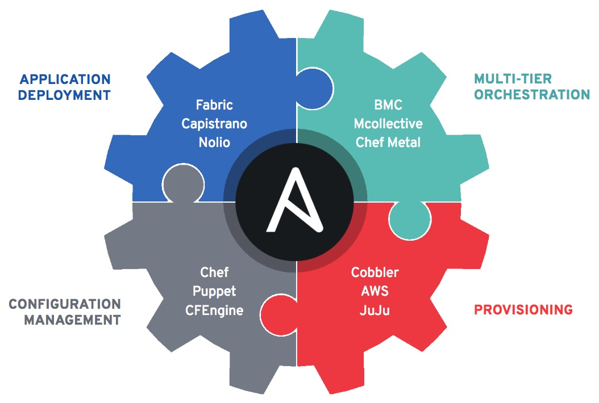
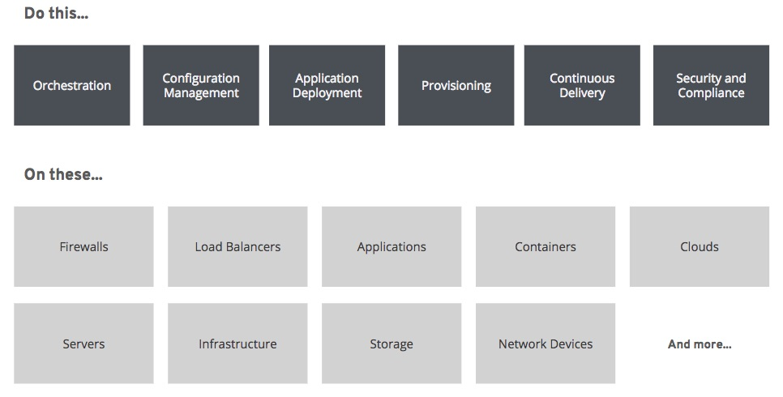
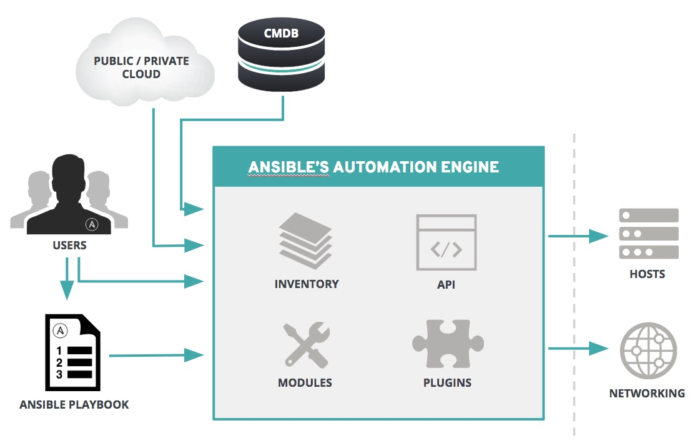

Ansible is capable of handling many powerful automation tasks with the flexibility to adapt to many environments and workflows. With Ansible, users can very quickly get up and running to do real work.
In this presentation, we will cover:
What is Ansible
How Ansible Works
Ad-Hoc Commands
Playbook Basics
Reuse and Redistribution of Ansible Content with Roles
Ansible Tower
WHAT IS ANSIBLE AUTOMATION?
The Ansible project is an open source community sponsored by Red Hat. It’s also a simple automation language that perfectly describes IT application environments in Ansible Playbooks.
Ansible Engine is a supported product built from the Ansible community project.
Ansible Tower is an enterprise framework for controlling, securing, managing and extending your Ansible automation (community or engine) with a UI and RESTful API.
WHY ANSIBLE?

THE ANSIBLE WAY
CROSS PLATFORM – Linux, Windows, UNIX
Agentless support for all major OS variants, physical, virtual, cloud and network.
HUMAN READABLE – YAML
Perfectly describe and document every aspect of your application environment
PERFECT DESCRIPTION OF APPLICATION
Every change can be made by playbooks, ensuring everyone is on the same page.
VERSION CONTROLLED
Playbooks are plain-text. Treat them like code in your existing version control.
DYNAMIC INVENTORIES
Capture all the servers 100% of the time, regardless of infrastructure, location, etc.
ORCHESTRATION THAT PLAYS WELL WITH OTHERS – HP SA, Puppet, Jenkins, RHNSS, etc.
Homogenize existing environments by leveraging current toolsets and update mechanisms.
BATTERIES INCLUDED
Ansible comes bundled with hundreds of modules for a wide variety of automation tasks:
cloud
containers
database
files
messaging
monitoring
network
notifications
packaging
source control
system
testing
utilities
web infrastructure
COMMUNITY
THE MOST POPULAR OPEN-SOURCE AUTOMATION COMMUNITY ON GITHUB
31,000+ stars & 12,000+ forks on GitHub
3500+ GitHub Contributors
Over 1500 modules shipped with Ansible
New contributors added every day
1400+ users on IRC channel
World-wide meetups taking place every week
Ansible Galaxy: over 18,000 subscribers
500,000+ downloads a month
AnsibleFests, Ansible Automates, and other global events
http://ansible.com/community
ANSIBLE: COMPLETE AUTOMATION

WHAT CAN I DO WITH ANSIBLE?
Automate the deployment and management of your entire IT footprint.

INSTALLING ANSIBLE
# the most common and preferred way of installation
$ pip install ansible
# install the epel-release RPM if needed on CentOS, RHEL, or Scientific Linux
$ sudo yum install ansible
# you will need the PPA repo configured
$ sudo apt-get install ansible
HOW ANSIBLE WORKS

MODULES
Modules are bits of code transferred to the target system and executed to satisfy the task declaration.
If Ansible doesn’t have a module that suits your needs there are the “run command” modules:
command: Takes the command and executes it. The most secure and predictable.
shell: Executes through a shell like /bin/sh so you can use pipes etc. Be careful.
script: Runs a local script on a remote node after transferring it.
raw: Executes a command without going through the Ansible module subsystem.
NOTE: Unlike standard modules, run commands have no concept of desired state and should only be used as a last resort
AD-HOC COMMANDS
# check all my inventory hosts are ready to be managed by Ansible
$ ansible all -m ping
# run the uptime command on all hosts in the web group
$ ansible web -m command -a “uptime”
# collect and display the discovered for the localhost
$ ansible localhost -m setup